空間向量
📌 本章要解決的核心問題
當我們描述飛機的飛行、火箭的發射、或者結構工程中的受力時，單靠一個數字（速率、力的大小）是不夠的——我們需要同時知道方向和大小。這就是向量（vector）的用武之地。本章從二維平面的向量出發，逐步擴展到三維空間，然後引入兩個關鍵的向量乘法——點積和叉積——最後用向量語言來描述直線、平面、曲面，以及替代直角座標的圓柱座標和球座標系統。
🔑 關鍵概念（10 條）
- 向量的基本性質：大小（magnitude）＋方向（direction），用有向線段表示
- 分量形式與單位向量：$\mathbf{v} = \langle v_x, v_y \rangle$ 或 $\mathbf{v} = v_x\mathbf{i} + v_y\mathbf{j}$
- 三維空間的擴展：$\mathbb{R}^3$ 中的點、距離公式、球面方程式
- 點積（dot product）：$\mathbf{u} \cdot \mathbf{v} = |\mathbf{u}||\mathbf{v}|\cos\theta$，結果是純量
- 叉積（cross product）：$\mathbf{u} \times \mathbf{v}$，結果是垂直於 $\mathbf{u}$ 和 $\mathbf{v}$ 的向量
- 直線與平面的方程式：參數式、對稱式、向量式、純量式
- 二次曲面（quadric surfaces）：橢球面、拋物面、雙曲面、圓錐面——用「跡線」分析
- 圓柱座標：$(r, \theta, z)$，適合處理圓柱對稱問題
- 球座標：$(\rho, \theta, \phi)$，適合處理球對稱問題
- 力矩（torque）：$\boldsymbol{\tau} = \mathbf{r} \times \mathbf{F}$，叉積的關鍵物理應用
🧭 邏輯鏈
平面向量（分量、運算）→ 三維擴展（座標系、距離、球面）→ 點積（角度、正交、投影、功）→ 叉積（正交向量、面積、體積、力矩）→ 直線與平面方程式 → 二次曲面 → 圓柱／球座標 → 為後續多變數微積分與向量微積分奠定基礎
2.1 平面中的向量（Vectors in the Plane）
在日常生活中，有些量只需要一個數字就能完整描述
在數學上，平面中的向量用有向線段（directed line segment）來表示——也就是一支箭。箭的起點稱為始點（initial point），終點稱為終點（terminal point），箭頭的長度代表大小，箭頭指向代表方向。向量通常用粗體小寫字母表示，如 $\mathbf{v}$，或手寫時在字母上方畫箭頭 $\vec{v}$。
向量的基本運算
向量有兩個基本運算：純量乘法（scalar multiplication）和向量加法（vector addition）。純量乘法 $k\mathbf{v}$ 將向量的大小乘以 $|k|$，方向保持不變（若 $k>0$）或反向（若 $k<0$）。向量加法有兩種圖解方法：三角形法（triangle method）——將第二個向量的始點放在第一個向量的終點，然後從第一個始點連到第二個終點；以及平行四邊形法（parallelogram method）——將兩個向量的始點重合，以它們為鄰邊畫出平行四邊形，對角線就是和。
如果你從 A 點走到 B 點（位移 $\mathbf{v}$），再從 B 點走到 C 點（位移 $\mathbf{w}$），你最終的位移就是從 A 直接到 C——這正是 $\mathbf{v}+\mathbf{w}$。向量的加法定義不是隨意的，它精確捕捉了「依序移動」的幾何意義。
分量形式（Component Form）
在座標平面上處理向量時，把向量的始點放在原點（稱為標準位置）是最方便的做法。此時向量完全由其終點座標 $(x,y)$ 決定，我們寫成分量形式 $\mathbf{v} = \langle x, y \rangle$。更一般地，若向量始於 $P(x_1,y_1)$、終於 $Q(x_2,y_2)$，則分量形式為 $\overrightarrow{PQ} = \langle x_2-x_1,\; y_2-y_1 \rangle$。
向量的大小（magnitude）就是從始點到終點的距離：$|\mathbf{v}| = \sqrt{x^2 + y^2}$。這是畢氏定理在向量上的直接體現——分量 $x$ 和 $y$ 構成直角三角形的兩股，而向量本身是斜邊。
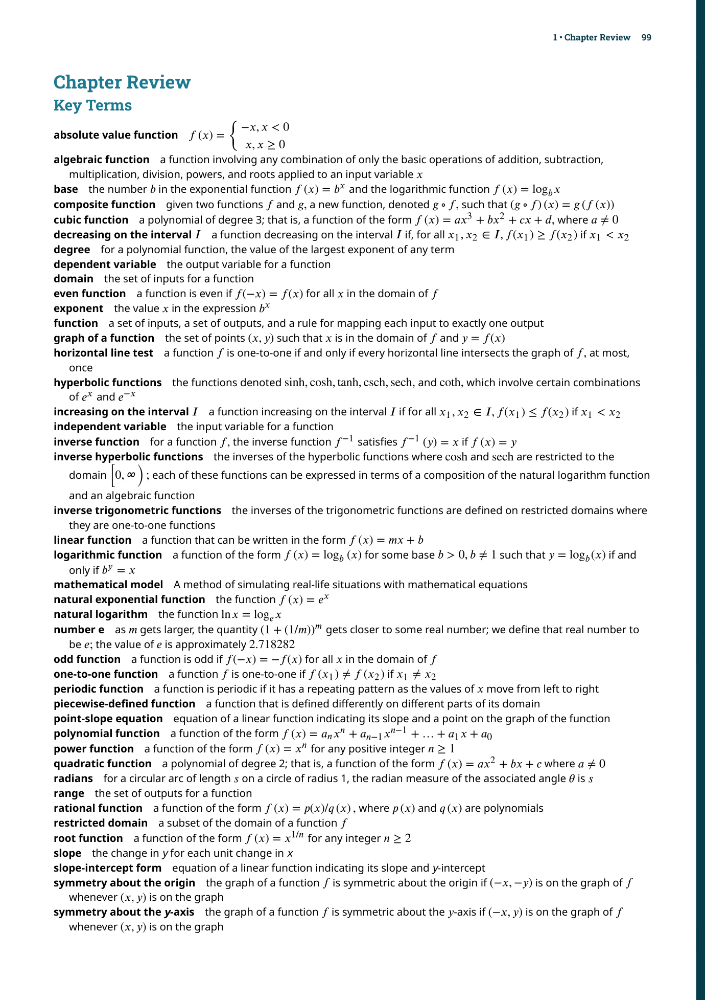
有了分量形式，向量的運算變得極其簡單——只需對各分量分別進行算術：$\langle x_1,y_1 \rangle + \langle x_2,y_2 \rangle = \langle x_1+x_2,\; y_1+y_2 \rangle$，$k\langle x,y \rangle = \langle kx, ky \rangle$。這意味著所有幾何問題都可以轉化為代數計算。
📝 範例
📝 範例：分量形式運算設 $\mathbf{v} = \langle -3, 4 \rangle$，$\mathbf{w} = \langle 5, -2 \rangle$。求：(a) $\mathbf{v}+\mathbf{w}$；(b) $3\mathbf{v}-2\mathbf{w}$；(c) $|\mathbf{v}|$。
解：
(a) $\mathbf{v}+\mathbf{w} = \langle -3+5,\; 4+(-2) \rangle = \langle 2, 2 \rangle$
(b) $3\mathbf{v}-2\mathbf{w} = \langle -9,12 \rangle - \langle 10,-4 \rangle = \langle -19, 16 \rangle$
(c) $|\mathbf{v}| = \sqrt{(-3)^2 + 4^2} = \sqrt{9+16} = 5$
單位向量（Unit Vectors）
單位向量是大小為 1 的向量。給定任意非零向量 $\mathbf{v}$，要得到與其方向相同的單位向量，只需將它除以自身大小：$\mathbf{u} = \dfrac{\mathbf{v}}{|\mathbf{v}|}$。這個過程稱為正規化（normalization）。兩個特別重要的單位向量是沿座標軸方向的 $\mathbf{i} = \langle 1,0 \rangle$ 和 $\mathbf{j} = \langle 0,1 \rangle$——稱為標準單位向量（standard unit vectors）。任何平面向量都可以寫成它們的線性組合：$\mathbf{v} = v_x\mathbf{i} + v_y\mathbf{j}$。
角括號 $\langle \rangle$ 表示向量，圓括號 $()$ 表示點。雖然在標準位置下它們的數值相同（都是 $(x, y)$），但概念上完全不同：向量代表位移（movement），點代表位置（location）。在運算中混淆兩者會導致重大錯誤。
向量的實際應用
向量在物理和工程中有無數應用。例如，當多個力同時作用在一個物體上時，我們需要求它們的合力（resultant force）——也就是所有力向量的和。同樣地，飛機的實際速度是它的空速（airspeed vector）加上風速（wind vector）。
📝 範例
📝 範例：求合力一輛卡車對陷在泥中的汽車施加 300 lb 的水平拉力。同時，Jane 和 Jed 以稍微向上的角度推動汽車，產生 150 lb 的力，與卡車拉力夾角 15°。求合力的大小和方向。
解：令卡車拉力沿正 $x$ 軸：$\mathbf{F}_1 = 300\mathbf{i}$。推力與之夾 15°：$\mathbf{F}_2 = \langle 150\cos 15^\circ,\; 150\sin 15^\circ \rangle \approx \langle 144.89,\; 38.82 \rangle$。合力 $\mathbf{F} = \langle 444.89,\; 38.82 \rangle$。大小 $|\mathbf{F}| \approx \sqrt{444.89^2 + 38.82^2} \approx 446.5$ lb。方向角 $\theta = \tan^{-1}(38.82/444.89) \approx 5.0^\circ$（在水平線上方）。
2.2 三維空間中的向量（Vectors in Three Dimensions）
真實世界是三維的——山脈有高度、飛機在三度空間中飛行

三個座標軸兩兩配對形成三個座標平面（coordinate planes）：$xy$ 平面（$z=0$）、$xz$ 平面（$y=0$）、$yz$ 平面（$x=0$）。這三個平面將空間分割成八個卦限（octants），類似於二維中的四個象限。第一卦限是 $x>0, y>0, z>0$ 的區域。
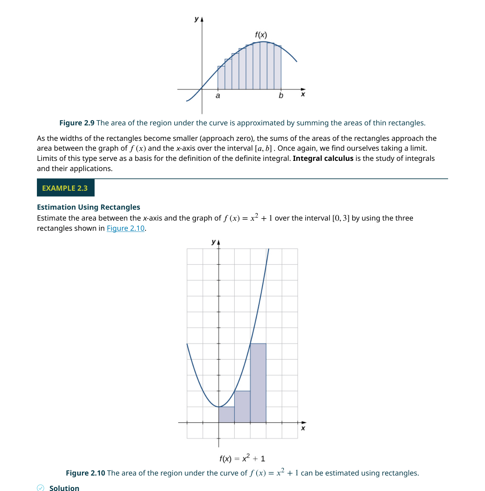
空間中的距離與球面
兩點 $P_1(x_1,y_1,z_1)$ 和 $P_2(x_2,y_2,z_2)$ 之間的距離是畢氏定理的直接推廣：
利用距離公式，我們可以寫出球面（sphere）的方程式——球面是所有到定點（球心）等距的點所構成的集合。若球心在 $(x_0,y_0,z_0)$、半徑為 $r$，則標準方程式為：
注意到圓方程式和球面方程式的相似性了嗎？在 $\mathbb{R}^1$（數線）中，$x=a$ 描述一個點；在 $\mathbb{R}^2$（平面）中，$x=a$ 描述一條垂直線；在 $\mathbb{R}^3$（空間）中，$x=a$ 描述一個平行於 $yz$ 平面的平面。同一個方程式在不同維度中代表完全不同的幾何物件——這是一個在後續學習中會反覆出現的重要主題。
三維空間中的向量
三維向量與二維向量共享相同的邏輯。向量 $\mathbf{v} = \langle v_x, v_y, v_z \rangle$（或 $v_x\mathbf{i} + v_y\mathbf{j} + v_z\mathbf{k}$）的大小為 $|\mathbf{v}| = \sqrt{v_x^2+v_y^2+v_z^2}$。標準單位向量新增了 $\mathbf{k} = \langle 0,0,1 \rangle$，沿正 $z$ 軸方向。向量加法和純量乘法仍然是逐分量運算。
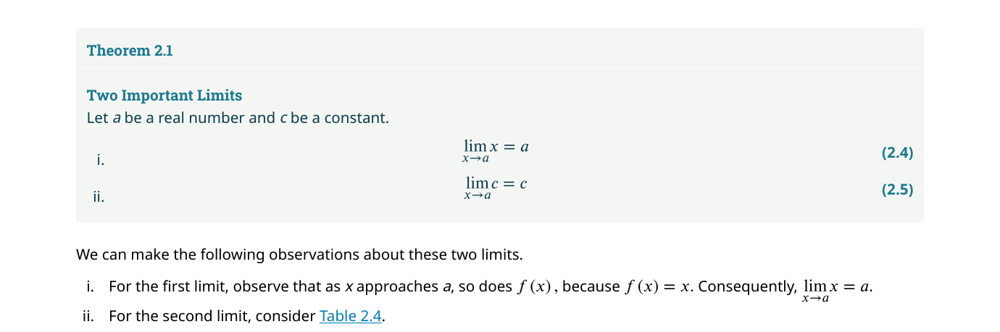
📝 範例
📝 範例：三維向量運算設 $\mathbf{v} = \langle 2, -1, 3 \rangle$，$\mathbf{w} = \langle -4, 0, 5 \rangle$。求：(a) $2\mathbf{v} - \mathbf{w}$；(b) $|\mathbf{v}|$；(c) 與 $\mathbf{v}$ 同方向的單位向量。
解：
(a) $2\mathbf{v}-\mathbf{w} = \langle 4,-2,6 \rangle - \langle -4,0,5 \rangle = \langle 8, -2, 1 \rangle$
(b) $|\mathbf{v}| = \sqrt{4+1+9} = \sqrt{14}$
(c) $\mathbf{\hat{v}} = \frac{1}{\sqrt{14}}\langle 2,-1,3 \rangle$
在二維中，兩條不平行又不重合的直線必定相交。但在三維中，兩條直線可以不平行卻也不相交——它們在不同的平面上「錯過」彼此。這種線稱為歪斜線。這是三維幾何與二維幾何之間最關鍵的差異之一。
2.3 點積（The Dot Product）
向量加法產生向量，純量乘法產生向量——但我們還需要一種能衡量兩個向量之間關係的運算。點積（dot product）（又稱純量積或內積）正是這樣的工具：它將兩個向量映射為一個純量，並告訴我們它們有多「對齊」。
點積與角度
點積最重要的幾何解釋來自以下定理：
從這個公式可以解出夾角：$\cos\theta = \dfrac{\mathbf{u} \cdot \mathbf{v}}{|\mathbf{u}||\mathbf{v}|}$。這個看似簡單的公式極其強大——它讓我們無需畫圖就可以計算兩個向量之間的角度。
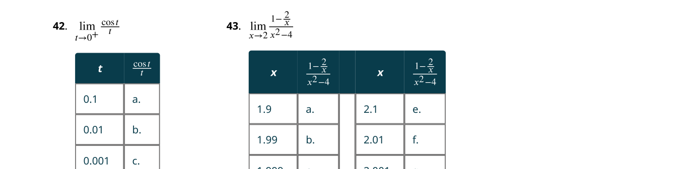
正交性（Orthogonality）
當兩個向量的夾角正好是 $90^\circ$（$\cos\theta = 0$）時，它們稱為正交（orthogonal）。從點積公式直接得到一個極簡潔的判別法：
這可能是整個向量代數中最常用的性質之一——你可以瞬間檢查兩個向量是否垂直，只需計算點積並檢查是否為零。
📝 範例
📝 範例：判別正交性判斷 $\mathbf{p} = \langle 3, -1, 2 \rangle$ 和 $\mathbf{q} = \langle 4, 2, -5 \rangle$ 是否正交。
解：$\mathbf{p} \cdot \mathbf{q} = 3(4) + (-1)(2) + 2(-5) = 12 - 2 - 10 = 0$。點積為零 → 兩個向量正交。
方向角與方向餘弦
一個向量與三個座標軸的夾角 $(\alpha, \beta, \gamma)$ 稱為方向角（direction angles），它們的餘弦值 $(\cos\alpha, \cos\beta, \cos\gamma)$ 稱為方向餘弦（direction cosines）。一個重要的性質是 $\cos^2\alpha + \cos^2\beta + \cos^2\gamma = 1$。在太空工程等領域，方向角對於精確控制飛行軌跡至關重要。
向量投影（Vector Projection）
有時我們需要知道一個向量在另一個向量方向上的「分量」有多大。例如，一個小孩以 55° 的角度拉著一輛玩具車——車子實際前進的力只有拉力在水平方向上的分量。這正是投影（projection）的概念。
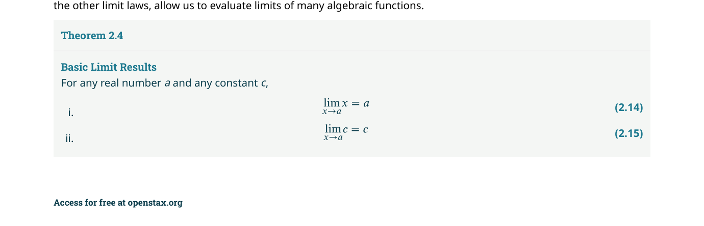
功（Work）
在物理中，當一個力 $\mathbf{F}$ 沿直線將物體從點 $P$ 移動到點 $Q$（位移向量 $\mathbf{s} = \overrightarrow{PQ}$），所做的功（work）定義為：
點積不只是幾何工具。假設一個水果商賣蘋果、香蕉和柳橙——數量向量 $\mathbf{q}=\langle 30,12,18 \rangle$，價格向量 $\mathbf{p}=\langle 0.50,0.25,1.00 \rangle$（元）。點積 $\mathbf{q}\cdot\mathbf{p}=30\times0.50+12\times0.25+18\times1.00=30$ 元——這就是當天的總銷售額。點積可以推廣到任意維度，成為數據分析中的基本運算。
初學者常犯的錯誤是：看到點積為零就認為 $\mathbf{u}$ 或 $\mathbf{v}$ 必為零向量。事實上，兩個非零向量只要互相垂直，點積就是零。這是正交性的定義，而不是其中一個為零的證據。
2.4 叉積（The Cross Product）
點積將兩個向量變成純量。但如果我們需要一個同時垂直於兩個給定向量的向量呢？這就是叉積（cross product）（又稱向量積）的用途。想像一個機械師用扳手轉動螺栓——他施加的力 $\mathbf{F}$ 和扳手從螺栓到施力點的徑向量 $\mathbf{r}$ 共同產生了力矩（torque），力矩的方向垂直於 $\mathbf{r}$ 和 $\mathbf{F}$ 所在的平面。
方向：右手法則
叉積的方向由右手法則（right-hand rule）決定：右手手指從 $\mathbf{u}$ 彎向 $\mathbf{v}$，拇指所指即為 $\mathbf{u} \times \mathbf{v}$ 的方向。注意 $\mathbf{v} \times \mathbf{u} = -(\mathbf{u} \times \mathbf{v})$——叉積是反交換律的。
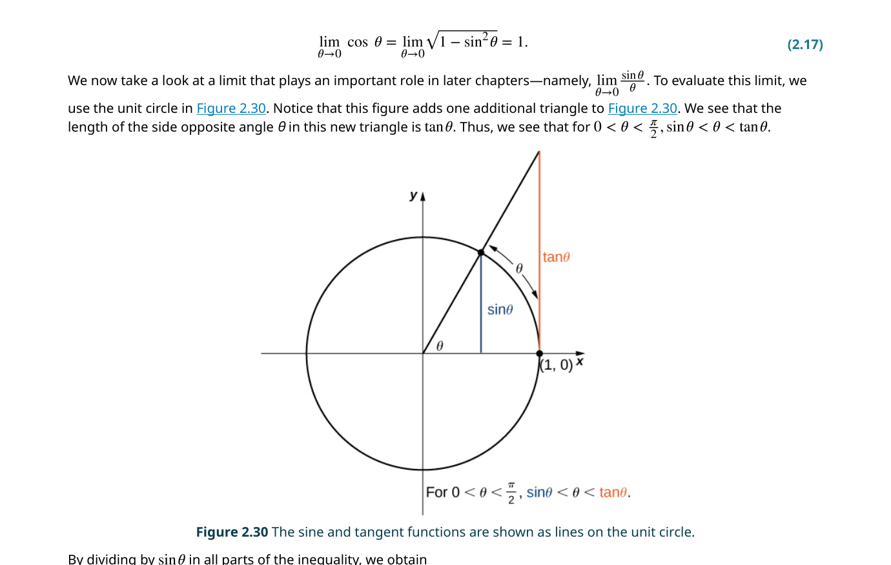
叉積的大小
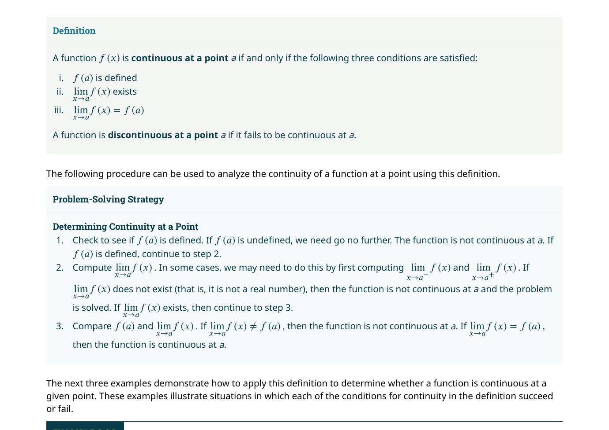
行列式記憶法
叉積公式看似複雜，但可以用行列式（determinant）優雅地記憶：
📝 範例
📝 範例：計算叉積設 $\mathbf{a} = \langle 2, 1, -1 \rangle$，$\mathbf{b} = \langle -3, 4, 0 \rangle$。求 $\mathbf{a} \times \mathbf{b}$。
解：用行列式：
$\mathbf{a} \times \mathbf{b} = \begin{vmatrix} \mathbf{i} & \mathbf{j} & \mathbf{k} \\ 2 & 1 & -1 \\ -3 & 4 & 0 \end{vmatrix} = \mathbf{i}(1\cdot0-(-1)\cdot4) - \mathbf{j}(2\cdot0-(-1)\cdot(-3)) + \mathbf{k}(2\cdot4-1\cdot(-3))$
$= \mathbf{i}(4) - \mathbf{j}(-3) + \mathbf{k}(11) = \langle 4, 3, 11 \rangle$。
驗證：$\mathbf{a}\cdot(\mathbf{a}\times\mathbf{b}) = 2(4)+1(3)+(-1)(11) = 8+3-11 = 0$ ✓；$\mathbf{b}\cdot(\mathbf{a}\times\mathbf{b}) = (-3)(4)+4(3)+0(11)=0$ ✓。
三重純量積（Triple Scalar Product）
將點積和叉積組合，得到三重純量積 $\mathbf{a} \cdot (\mathbf{b} \times \mathbf{c})$。其絕對值等於以 $\mathbf{a}, \mathbf{b}, \mathbf{c}$ 為邊的平行六面體（parallelepiped）的體積。三重純量積可以用一個 $3 \times 3$ 行列式計算：
若三重純量積為零，則三個向量共面（coplanar）——它們落在同一個平面上。這提供了一個檢測共面性的簡潔方法。
力矩（Torque）
力矩是叉積最重要的物理應用。當力 $\mathbf{F}$ 施加在徑向量 $\mathbf{r}$（從旋轉軸心到施力點）的端點時，力矩定義為：
點積結果是純量，叉積結果是向量。點積 $\mathbf{u} \cdot \mathbf{v} = 0$ 表示正交，叉積 $\mathbf{u} \times \mathbf{v} = \mathbf{0}$ 表示平行（或其中一個為零向量）。兩者提供互補的幾何訊息——不要搞混。記住：點積測量「對齊程度」，叉積產生「垂直向量」。
2.5 直線與平面方程式（Equations of Lines and Planes in Space）
在二維中，一條直線只需要一個斜率（或一點加方向）就能描述
空間中直線的方程式
給定直線上一點 $P_0(x_0,y_0,z_0)$ 和平行於直線的方向向量 $\mathbf{v} = \langle a,b,c \rangle$，直線上任意點 $P(x,y,z)$ 滿足 $\overrightarrow{P_0P} = t\mathbf{v}$（$t$ 為實數參數）。由此得到：
向量式：$\mathbf{r} = \mathbf{r}_0 + t\mathbf{v}$（$\mathbf{r}_0 = \langle x_0,y_0,z_0 \rangle$）
參數式：$x = x_0 + at,\; y = y_0 + bt,\; z = z_0 + ct,\; t \in \mathbb{R}$
對稱式：$\dfrac{x-x_0}{a} = \dfrac{y-y_0}{b} = \dfrac{z-z_0}{c}$（前提：$a,b,c \neq 0$）
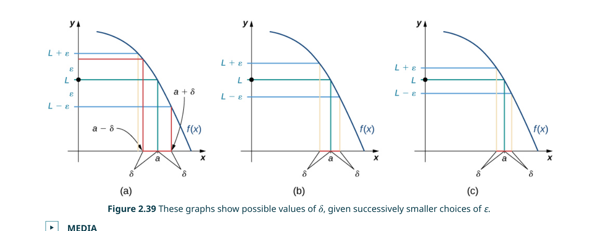
空間中直線之間的關係
三維空間中的兩條直線有四種可能的關係：(1) 重合（equal）；(2) 平行但不重合（parallel）；(3) 相交於一點（intersecting）；(4) 歪斜（skew）——既不平行也不相交。歪斜線是三維空間獨有的現象。
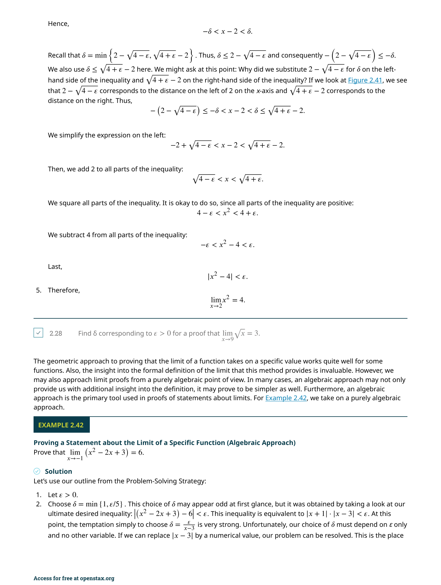
空間中平面的方程式
平面可以由一個點 $P_0$ 和一個法向量（normal vector）$\mathbf{n} = \langle a,b,c \rangle$（垂直於平面的向量）來定義。平面上任意點 $P$ 滿足向量 $\overrightarrow{P_0P}$ 垂直於 $\mathbf{n}$，即 $\mathbf{n} \cdot \overrightarrow{P_0P} = 0$。
向量式：$\mathbf{n} \cdot (\mathbf{r} - \mathbf{r}_0) = 0$
純量式（點法式）：$a(x-x_0) + b(y-y_0) + c(z-z_0) = 0$
一般式：$ax + by + cz + d = 0$（其中 $d = -(ax_0+by_0+cz_0)$）
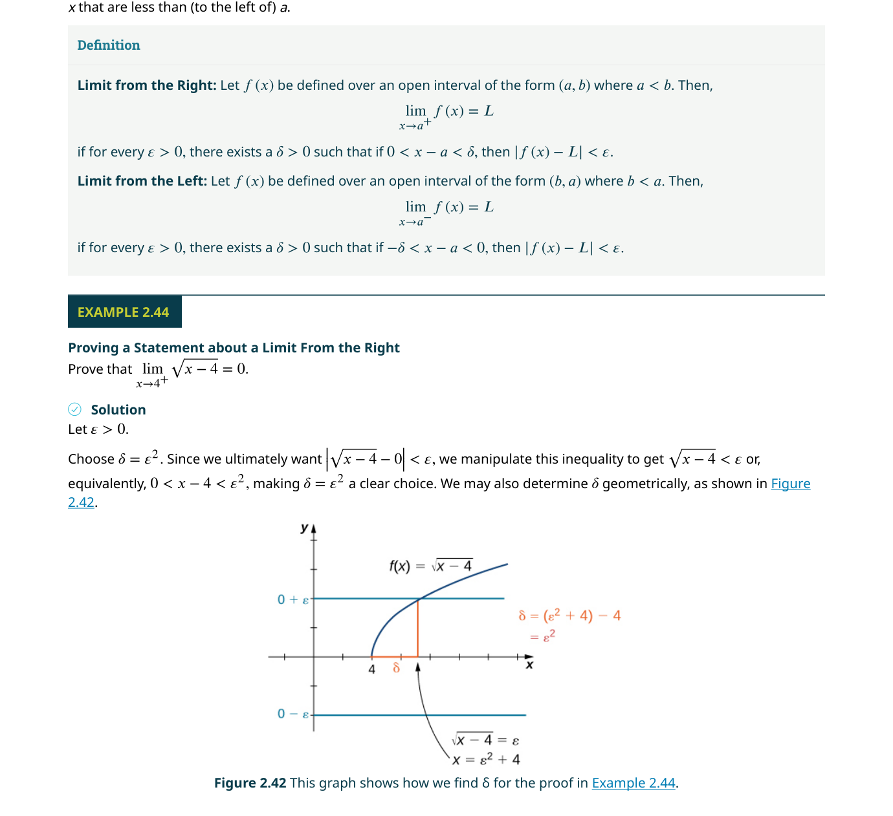
點到平面和點到直線的距離
點 $P$ 到平面 $ax+by+cz+d=0$ 的距離公式：
點到直線的距離可以用叉積計算：
📝 範例
📝 範例：求平面方程式求通過 $A(1,0,2)$、$B(-2,1,3)$、$C(0,-1,1)$ 三點的平面方程式。
解：先求兩個落在平面上的向量：$\overrightarrow{AB} = \langle -3,1,1 \rangle$，$\overrightarrow{AC} = \langle -1,-1,-1 \rangle$。法向量 $\mathbf{n} = \overrightarrow{AB} \times \overrightarrow{AC} = \langle 1(-1)-1(-1),\; 1(-1)-(-3)(-1),\; (-3)(-1)-1(-1) \rangle = \langle 0, -4, 4 \rangle$。使用 $A$ 點：$0(x-1) + (-4)(y-0) + 4(z-2) = 0$，即 $-4y + 4z - 8 = 0$，化簡為 $y - z + 2 = 0$。
注意一個漂亮的對偶關係：直線由方向向量定義（平行於直線），平面由法向量定義（垂直於平面）。兩平面的夾角等於它們法向量的夾角；兩直線的夾角等於它們方向向量的夾角。這種對偶性貫穿整個向量幾何。
當方向向量的某個分量為零時（例如 $\mathbf{v} = \langle 2, 0, 3 \rangle$），對稱式中對應的分母為零是無意義的。此時應採用「混合表示」：例如 $y = y_0$（單獨列出），其餘兩個用對稱式：$\frac{x-x_0}{2} = \frac{z-z_0}{3}$。許多初學者會在這一步出錯。
2.6 二次曲面（Quadric Surfaces）
我們已經學過平面（一次方程式）和球面。現在我們面對的是更豐富的一類曲面
柱面（Cylinders）
在數學中，「柱面」的含義比日常語言廣泛得多。任何由一組平行線（稱為母線 rulings）通過一條平面曲線所形成的曲面都是柱面。例如 $x^2 + y^2 = 1$ 在三維中不是一個圓——而是一個半徑為 1 的無限長圓柱，因為 $z$ 可以任意取值。
用跡線分析曲面
繪製三維曲面最有效的工具是跡線（trace）——曲面與座標平面（或與座標平面平行的平面）的交線。例如，要分析橢球面 $\frac{x^2}{a^2} + \frac{y^2}{b^2} + \frac{z^2}{c^2} = 1$，我們分別設 $z=0$、$y=0$、$x=0$，得到三個座標平面上的橢圓——這些跡線構成了曲面的「骨架」。
六大標準二次曲面
| 曲面名稱 | 標準方程式 | 關鍵跡線 |
|---|---|---|
| 橢球面 Ellipsoid | $\frac{x^2}{a^2}+\frac{y^2}{b^2}+\frac{z^2}{c^2}=1$ | 所有跡線皆為橢圓（$a=b=c$ 時為球面） |
| 單葉雙曲面 Hyperboloid of One Sheet | $\frac{x^2}{a^2}+\frac{y^2}{b^2}-\frac{z^2}{c^2}=1$ | $xy$ 跡線為橢圓，$xz$/$yz$ 跡線為雙曲線 |
| 雙葉雙曲面 Hyperboloid of Two Sheets | $-\frac{x^2}{a^2}-\frac{y^2}{b^2}+\frac{z^2}{c^2}=1$ | $z=k$ 跡線（$|k|>c$）為橢圓，其餘為雙曲線 |
| 橢圓錐面 Elliptic Cone | $\frac{x^2}{a^2}+\frac{y^2}{b^2}-\frac{z^2}{c^2}=0$ | $xy$ 平面跡線為一點，$z=k$ 跡線為橢圓 |
| 橢圓拋物面 Elliptic Paraboloid | $z = \frac{x^2}{a^2}+\frac{y^2}{b^2}$ | $z=k>0$ 跡線為橢圓，$xz$/$yz$ 跡線為拋物線 |
| 雙曲拋物面 Hyperbolic Paraboloid | $z = \frac{x^2}{a^2}-\frac{y^2}{b^2}$ | 形似馬鞍——$z=k$ 跡線為雙曲線，$x$ 方向向上彎，$y$ 方向向下彎 |
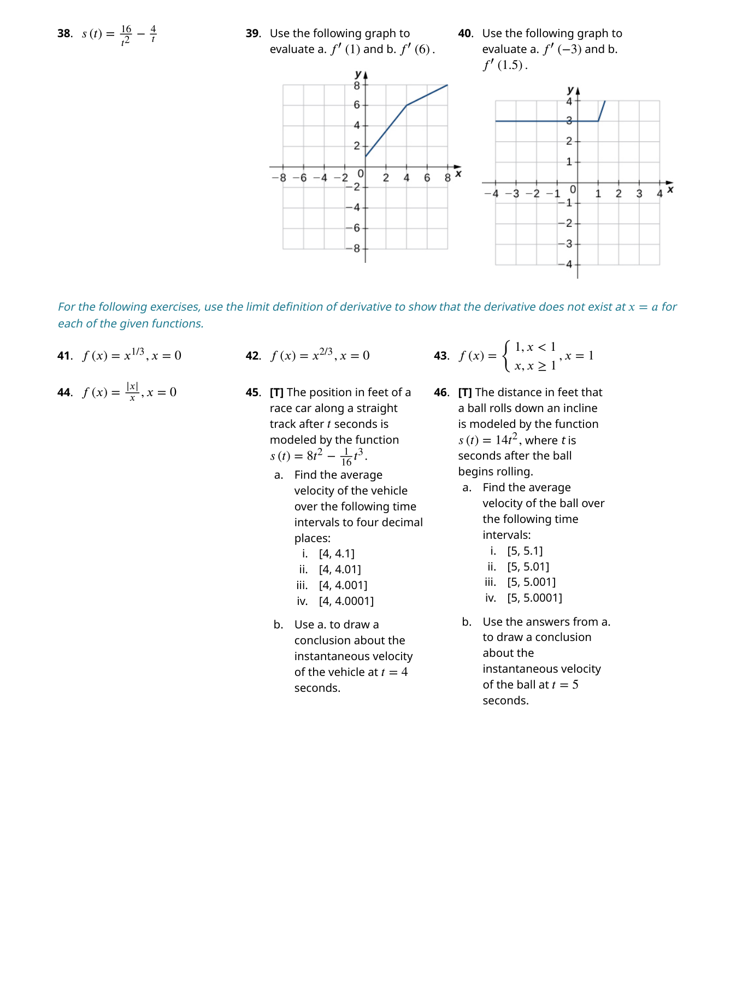
注意雙曲拋物面（$z = x^2 - y^2$）的形狀像一個馬鞍——沿 $x$ 方向開口向上，沿 $y$ 方向開口向下。它在原點是一個鞍點（saddle point），這在多變數微積分中會是一個關鍵概念。
注意到二次曲面與二維的二次曲線（conic sections）之間的對應了嗎？橢球面 ↔ 橢圓、橢圓拋物面 ↔ 拋物線、雙曲面 ↔ 雙曲線。實際上，二次曲面的名稱直接來自其跡線的類型——「橢圓拋物面」的意思就是：$xy$ 平面的跡線是橢圓，而 $xz$ 和 $yz$ 平面的跡線是拋物線。
📝 範例
📝 範例：識別二次曲面識別方程式 $16x^2 + 9y^2 + 16z^2 = 144$ 所描述的曲面。
解：將方程式化為標準形式：$\frac{x^2}{9} + \frac{y^2}{16} + \frac{z^2}{9} = 1$。所有項的係數皆為正，且右邊為 1 → 這是一個橢球面，中心在原點，半軸長分別為 $a=3$（$x$ 方向）、$b=4$（$y$ 方向）、$c=3$（$z$ 方向）。
單葉雙曲面有一個負號、雙葉雙曲面有兩個負號——但更簡單的方法是：在單葉雙曲面中只有一個變數帶負號，另外兩個帶正號，右邊為 +1。在雙葉雙曲面中，有兩個負號、一個正號，右邊為 +1。或者直接看：雙葉雙曲面是「分開的兩片」，單葉是「連通的一片」。
2.7 圓柱座標與球座標（Cylindrical and Spherical Coordinates）
直角座標系 $(x, y, z)$ 雖然通用，但在處理某些對稱性問題時非常笨拙
圓柱座標（Cylindrical Coordinates）
圓柱座標 $(r, \theta, z)$ 是極座標 $(r, \theta)$ 的自然擴展——$(r, \theta)$ 描述點在 $xy$ 平面上的投影，$z$ 則是原本的直角座標 $z$。轉換公式：
圓柱座標非常適合描述具有旋轉對稱性的問題——例如計算圓形水管中的流量、分析柱狀電容器的電場。在圓柱座標中，圓柱面 $x^2+y^2=a^2$ 簡化為 $r=a$，圓錐面 $z=\sqrt{x^2+y^2}$ 簡化為 $z=r$。
球座標（Spherical Coordinates）
球座標 $(\rho, \theta, \phi)$ 用一個距離和兩個角度來定位空間中的點。$\rho$（讀作 rho）是點到原點的距離，$\theta$ 與圓柱座標中的 $\theta$ 相同，$\phi$（讀作 phi）是從正 $z$ 軸向下量的角度（$0 \leq \phi \leq \pi$）。
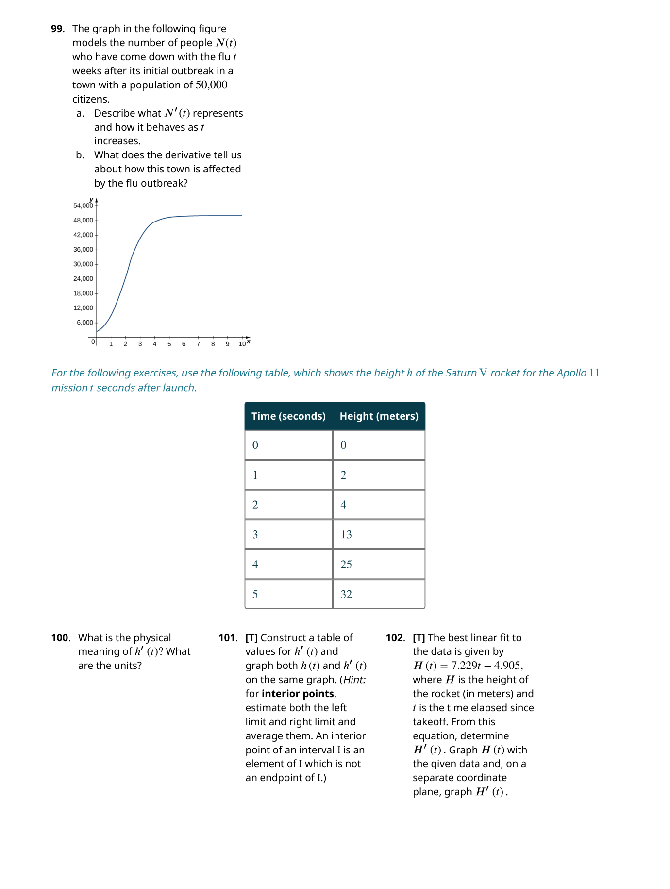
球 → 直角：$x = \rho\sin\phi\cos\theta,\; y = \rho\sin\phi\sin\theta,\; z = \rho\cos\phi$
直角 → 球：$\rho = \sqrt{x^2+y^2+z^2},\; \theta = \tan^{-1}\frac{y}{x},\; \phi = \cos^{-1}\frac{z}{\rho}$
球座標在處理球對稱性問題時最為自然。例如球面 $x^2+y^2+z^2=R^2$ 變成 $\rho = R$；圓錐面 $z = \sqrt{x^2+y^2}$ 變成 $\phi = \pi/4$。這在地理學中也有直接應用——地球上的緯度和經度本質上就是球座標：緯度對應 $90^\circ - \phi$，經度對應 $\theta$。
📝 範例
📝 範例：座標轉換將直角座標點 $(2, -2, 1)$ 轉換為圓柱座標和球座標。
解：
圓柱座標：$r = \sqrt{4+4} = 2\sqrt{2}$。$\theta$：$x>0, y<0$ → 第四象限 → $\theta = \tan^{-1}(-1) = -\frac{\pi}{4}$（或 $\frac{7\pi}{4}$）。$z=1$。結果：$(2\sqrt{2}, -\frac{\pi}{4}, 1)$。
球座標：$\rho = \sqrt{4+4+1} = 3$。$\theta = -\frac{\pi}{4}$。$\phi = \cos^{-1}(\frac{1}{3}) \approx 1.23$ 弧度（$\approx 70.5^\circ$）。結果：$(3, -\frac{\pi}{4}, \cos^{-1}(\frac{1}{3}))$。
如何選擇座標系？
選擇合適的座標系是解決問題的關鍵一步。經驗法則：
- 直角座標：適合沒有明顯對稱性的問題（如潛艇直線航行）
- 圓柱座標：適合圍繞一條直線（通常是 $z$ 軸）有旋轉對稱性的問題（如水管、圓柱形容器）
- 球座標：適合關於一點有球對稱性的問題（如行星重力場、圓頂體育場）
在面對一個問題時，先問自己：「這個系統的核心對稱性是什麼？」如果答案是「繞一條軸旋轉」→ 圓柱座標。如果答案是「從一個點向外輻射」→ 球座標。如果答案是「沿一個方向延伸」→ 柱面（cylindrical surface）。對稱性的識別往往是解題中最有價值的一步。
在球座標中，$\theta$ 是方位角（在 $xy$ 平面中從正 $x$ 軸量，$0$ 到 $2\pi$），$\phi$ 是極角（從正 $z$ 軸向下量，$0$ 到 $\pi$）。注意某些物理教科書會互換這兩個符號——物理學家常用 $\theta$ 作為極角、$\phi$ 作為方位角。使用任何公式前，務必確認你參考的來源採用哪種慣例。
📋 關鍵概念回顧（Key Concepts）
- 三維向量（Vectors in $\mathbb{R}^3$）：以 $\langle a, b, c angle$ 或 $a\mathbf{i} + b\mathbf{j} + c\mathbf{k}$ 表示。向量具有大小和方向，分量形式使代數運算成為可能。
- 向量的大小：$|\mathbf{v}| = \sqrt{v_1^2 + v_2^2 + v_3^2}$。單位向量是大小為 1 的向量：$\mathbf{\hat{v}} = \mathbf{v}/|\mathbf{v}|$。
- 點積（Dot Product）：$\mathbf{u} \cdot \mathbf{v} = u_1v_1 + u_2v_2 + u_3v_3 = |\mathbf{u}||\mathbf{v}|\cos\theta$。結果為純量，用於判斷正交性（點積為 0）、求夾角、計算投影和功。
- 投影（Projection）：$\mathbf{u}$ 在 $\mathbf{v}$ 上的純量投影 = $\frac{\mathbf{u}\cdot\mathbf{v}}{|\mathbf{v}|}$；向量投影 = $\frac{\mathbf{u}\cdot\mathbf{v}}{|\mathbf{v}|^2}\mathbf{v}$。將一個向量分解為平行和垂直分量。
- 叉積（Cross Product）：$\mathbf{u} \times \mathbf{v} = \begin{vmatrix} \mathbf{i} & \mathbf{j} & \mathbf{k} \\ u_1 & u_2 & u_3 \\ v_1 & v_2 & v_3 \end{vmatrix}$。結果為垂直於 $\mathbf{u}$ 和 $\mathbf{v}$ 的向量，大小等於以 $\mathbf{u},\mathbf{v}$ 為鄰邊的平行四邊形面積。
- 空間中的直線：由一點 $P_0$ 和方向向量 $\mathbf{v}$ 決定。參數方程：$\mathbf{r} = \mathbf{r}_0 + t\mathbf{v}$；對稱方程：$\frac{x-x_0}{a} = \frac{y-y_0}{b} = \frac{z-z_0}{c}$。
- 空間中的平面：由一點 $P_0$ 和法向量 $\mathbf{n}$ 決定。方程式：$\mathbf{n} \cdot (\mathbf{r} - \mathbf{r}_0) = 0$，即 $a(x-x_0) + b(y-y_0) + c(z-z_0) = 0$。
- 二次曲面（Quadric Surfaces）：方程為 $Ax^2 + By^2 + Cz^2 + Dxy + Exz + Fyz + \cdots = 0$。六大基本類型：橢球面、單葉雙曲面、雙葉雙曲面、橢圓拋物面、雙曲拋物面（馬鞍面）、橢圓錐面。
- 圓柱座標（Cylindrical Coordinates）：$(r, \theta, z)$，其中 $x = r\cos\theta,\; y = r\sin\theta,\; z = z$。適合處理具有軸對稱性的問題。
- 球座標（Spherical Coordinates）：$( ho, \theta, \phi)$，其中 $x = ho\sin\phi\cos\theta,\; y = ho\sin\phi\sin\theta,\; z = ho\cos\phi$。$ ho$ 為到原點距離，$\phi$ 為與正 $z$ 軸夾角。
- 距離公式：兩點 $(x_1,y_1,z_1)$ 與 $(x_2,y_2,z_2)$ 的距離為 $\sqrt{(x_2-x_1)^2 + (y_2-y_1)^2 + (z_2-z_1)^2}$。球面方程式：$(x-a)^2 + (y-b)^2 + (z-c)^2 = R^2$。
📐 關鍵公式（Key Equations）
| 公式 | 說明 |
|---|---|
| $$|\mathbf{v}| = \sqrt{v_1^2 + v_2^2 + v_3^2}$$ | 向量的大小（模長） |
| $$\mathbf{u} \cdot \mathbf{v} = u_1v_1 + u_2v_2 + u_3v_3 = |\mathbf{u}||\mathbf{v}|\cos\theta$$ | 點積 |
| $$\cos\theta = \frac{\mathbf{u}\cdot\mathbf{v}}{|\mathbf{u}||\mathbf{v}|}$$ | 兩向量夾角 |
| $$\text{proj}_{\mathbf{v}}\mathbf{u} = \frac{\mathbf{u}\cdot\mathbf{v}}{|\mathbf{v}|^2}\mathbf{v}$$ | $\mathbf{u}$ 在 $\mathbf{v}$ 上的向量投影 |
| $$\mathbf{u} \times \mathbf{v} = \begin{vmatrix} \mathbf{i} & \mathbf{j} & \mathbf{k} \\ u_1 & u_2 & u_3 \\ v_1 & v_2 & v_3 \end{vmatrix}$$ | 叉積（行列式形式） |
| $$|\mathbf{u} \times \mathbf{v}| = |\mathbf{u}||\mathbf{v}|\sin\theta$$ | 叉積的大小（平行四邊形面積） |
| $$\mathbf{r} = \mathbf{r}_0 + t\mathbf{v},\quad t \in \mathbb{R}$$ | 空間直線的參數方程 |
| $$a(x-x_0) + b(y-y_0) + c(z-z_0) = 0$$ | 空間平面的點法式方程 |
| $$\frac{x^2}{a^2} + \frac{y^2}{b^2} + \frac{z^2}{c^2} = 1$$ | 橢球面標準方程 |
| $$\frac{x^2}{a^2} + \frac{y^2}{b^2} - \frac{z^2}{c^2} = 1$$ | 單葉雙曲面標準方程 |
| $$z = \frac{x^2}{a^2} + \frac{y^2}{b^2}$$ | 橢圓拋物面標準方程 |
| $$z = \frac{x^2}{a^2} - \frac{y^2}{b^2}$$ | 雙曲拋物面（馬鞍面）標準方程 |
| $$x = r\cos\theta,\; y = r\sin\theta,\; z = z$$ | 圓柱座標轉換 |
| $$x = ho\sin\phi\cos\theta,\; y = ho\sin\phi\sin\theta,\; z = ho\cos\phi$$ | 球座標轉換 |
| $$(x-a)^2 + (y-b)^2 + (z-c)^2 = R^2$$ | 球面方程式 |
| $$\mathbf{u} \cdot (\mathbf{v} \times \mathbf{w}) = \begin{vmatrix} u_1 & u_2 & u_3 \\ v_1 & v_2 & v_3 \\ w_1 & w_2 & w_3 \end{vmatrix}$$ | 純量三重積（平行六面體體積） |
本章摘要
本章從平面向量出發，逐步建立了三維空間中向量運算的完整體系。以下是七個最重要的觀念：
- 向量 = 大小 + 方向——用有向線段表示，分量形式讓代數計算成為可能
- 三維擴展——距離公式、球面方程式、標準單位向量 $\mathbf{i},\mathbf{j},\mathbf{k}$
- 點積 = 純量——$\mathbf{u}\cdot\mathbf{v} = |\mathbf{u}||\mathbf{v}|\cos\theta$；測量對齊程度；導出角度、正交判別、投影、功
- 叉積 = 向量——$\mathbf{u}\times\mathbf{v}$ 垂直於 $\mathbf{u}$ 和 $\mathbf{v}$；大小等於平行四邊形面積；用於力矩
- 直線與平面——方向向量定義直線，法向量定義平面；點到線/面的距離公式
- 二次曲面——橢球面、雙曲面、拋物面、錐面；用跡線分析來繪製
- 替代座標系——圓柱座標 $(r,\theta,z)$ 適合旋轉對稱；球座標 $(\rho,\theta,\phi)$ 適合球對稱
空間距離：$d = \sqrt{(x_2-x_1)^2+(y_2-y_1)^2+(z_2-z_1)^2}$
球面：$(x-x_0)^2+(y-y_0)^2+(z-z_0)^2 = r^2$
點積：$\mathbf{u}\cdot\mathbf{v} = u_xv_x+u_yv_y+u_zv_z = |\mathbf{u}||\mathbf{v}|\cos\theta$
叉積：$\mathbf{u}\times\mathbf{v} = \begin{vmatrix}\mathbf{i}&\mathbf{j}&\mathbf{k}\\u_x&u_y&u_z\\v_x&v_y&v_z\end{vmatrix}$，$|\mathbf{u}\times\mathbf{v}| = |\mathbf{u}||\mathbf{v}|\sin\theta$
投影：$\text{proj}_{\mathbf{v}}\mathbf{u} = \frac{\mathbf{u}\cdot\mathbf{v}}{|\mathbf{v}|^2}\mathbf{v}$
功：$W = \mathbf{F}\cdot\mathbf{s}$
力矩：$\boldsymbol{\tau} = \mathbf{r}\times\mathbf{F}$
直線參數式：$x=x_0+at,\; y=y_0+bt,\; z=z_0+ct$
平面方程式：$a(x-x_0)+b(y-y_0)+c(z-z_0)=0$
點到平面距離：$d = \frac{|ax_P+by_P+cz_P+d|}{\sqrt{a^2+b^2+c^2}}$
圓柱座標：$x=r\cos\theta,\; y=r\sin\theta,\; z=z$
球座標：$x=\rho\sin\phi\cos\theta,\; y=\rho\sin\phi\sin\theta,\; z=\rho\cos\phi$
⚠️ 初學者常見錯誤
$\mathbf{u}\cdot\mathbf{v}=0$ 意味著向量正交（垂直）；$\mathbf{u}\times\mathbf{v}=\mathbf{0}$ 意味著向量平行（或其中一個為零向量）。兩者提供完全不同的幾何訊息。許多學生記住「零等於垂直」卻忘了這只適用於點積——叉積為零恰好相反，表示兩個向量方向相同或相反。記憶口訣：點積零 → 九十度；叉積零 → 同一線。
叉積 $\mathbf{u}\times\mathbf{v}$ 是只在 $\mathbb{R}^3$ 中有定義的運算——你需要第三個維度來容納同時垂直於兩個向量的結果向量。在二維中，不可能找到一個非零向量同時垂直於兩個不共線的向量。不要把二維向量直接放進叉積公式——如果需要，可以把它們當作 $z=0$ 的三維向量來處理。
在球座標中，$\phi \in [0, \pi]$（從正 $z$ 軸向下量半圈），不是 $[0, 2\pi]$。$\phi > \pi$ 沒有意義，因為那會讓點出現在「上方」。$\phi=0$ 是北極，$\phi=\pi$ 是南極。同時注意物理課本常把 $\theta$ 和 $\phi$ 的角色互換——使用前務必檢查你所在領域的慣例。
$|\mathbf{u}\times\mathbf{v}|$ 給出的是平行四邊形的面積。如果你需要的是三角形的面積（例如由三個頂點定義的三角形），記得取一半：$\text{Area} = \frac{1}{2}|\mathbf{u}\times\mathbf{v}|$。這是一個在考試中極常被扣分的小細節。
當方向向量 $\mathbf{v} = \langle a,b,c \rangle$ 中有零分量時（例如 $b=0$），對稱式 $\frac{y-y_0}{b}$ 是無定義的。正確做法是將該變數單獨列出：$y = y_0$（因為該方向上的座標保持不變）。不要把分母為零的對稱式留在答案中——那是數學上不成立的表述。
✅ 自我檢測（Self-Check）
完成以下題目檢驗你對本章核心概念的掌握程度。點擊展開查看答案。
題 1：點積求夾角 — 求向量 $\mathbf{u} = \langle 3, -1, 2 angle$ 和 $\mathbf{v} = \langle 1, 2, -1 angle$ 之間的夾角
答案：$\mathbf{u} \cdot \mathbf{v} = 3(1) + (-1)(2) + 2(-1) = 3 - 2 - 2 = -1$。
$|\mathbf{u}| = \sqrt{9+1+4} = \sqrt{14}$，$|\mathbf{v}| = \sqrt{1+4+1} = \sqrt{6}$。
$\cos\theta = \frac{-1}{\sqrt{14}\sqrt{6}} = \frac{-1}{\sqrt{84}} \approx -0.1091$。
$\theta = \arccos(-0.1091) \approx 96.3^\circ$。
題 2：叉積求平行四邊形面積 — $\mathbf{a} = \langle 2, 1, -1 angle$，$\mathbf{b} = \langle -3, 4, 0 angle$，求以它們為鄰邊的平行四邊形面積
答案：$\mathbf{a} \times \mathbf{b} = \begin{vmatrix} \mathbf{i} & \mathbf{j} & \mathbf{k} \\ 2 & 1 & -1 \\ -3 & 4 & 0 \end{vmatrix} = \mathbf{i}(4) - \mathbf{j}(-3) + \mathbf{k}(11) = \langle 4, 3, 11
angle$。
面積 $= |\mathbf{a} \times \mathbf{b}| = \sqrt{16 + 9 + 121} = \sqrt{146}$。
題 3：平面方程式 — 求通過點 $P(1, 2, 3)$ 且法向量 $\mathbf{n} = \langle 2, -1, 4 angle$ 的平面方程式
答案：$2(x - 1) + (-1)(y - 2) + 4(z - 3) = 0$。
展開：$2x - 2 - y + 2 + 4z - 12 = 0$。
一般式：$2x - y + 4z - 12 = 0$。
題 4：二次曲面辨識 — 判斷 $x^2 + \frac{y^2}{4} - z^2 = 1$ 是什麼曲面
答案：方程可改寫為 $\frac{x^2}{1} + \frac{y^2}{4} - \frac{z^2}{1} = 1$。有兩項正、一項負、右側為正 → 這是單葉雙曲面（hyperboloid of one sheet）。
$z = 0$ 的跡線：$\frac{x^2}{1} + \frac{y^2}{4} = 1$ → 橢圓。$x = 0$ 的跡線：$\frac{y^2}{4} - z^2 = 1$ → 雙曲線。
題 5：點到平面距離 — 求點 $P(3, -1, 2)$ 到平面 $2x - y + 4z - 12 = 0$ 的距離
答案：$d = \frac{|2(3) + (-1)(-1) + 4(2) - 12|}{\sqrt{4 + 1 + 16}} = \frac{|6 + 1 + 8 - 12|}{\sqrt{21}} = \frac{|3|}{\sqrt{21}} = \frac{3}{\sqrt{21}} = \frac{\sqrt{21}}{7}$。
📚 延伸資源
- 3Blue1Brown — Essence of Linear Algebra：YouTube 系列，用動畫直觀展示點積、叉積和線性變換的幾何意義
- Khan Academy — Vectors：互動練習，從基礎到進階的向量運算
- GeoGebra 3D Calculator：免費工具，可在三維空間中繪製向量、平面和二次曲面，即時旋轉觀察
- Desmos 3D：支援三維函數繪圖的線上工具，適合探索二次曲面的形狀
- 下一章預告：第 3 章 — 向量值函數將把向量的概念與微積分結合，引入速度、加速度、曲率和 Frenet 標架等核心概念